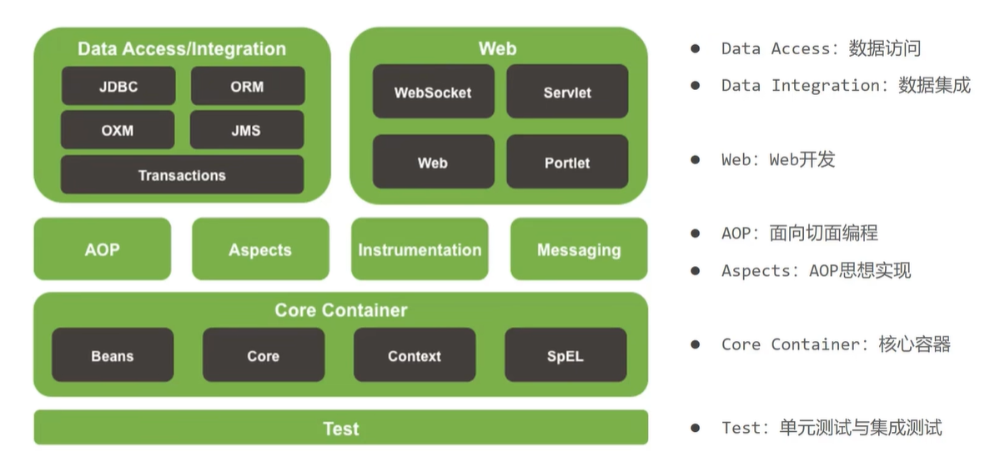
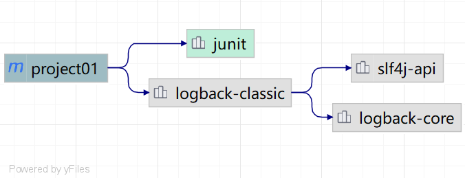
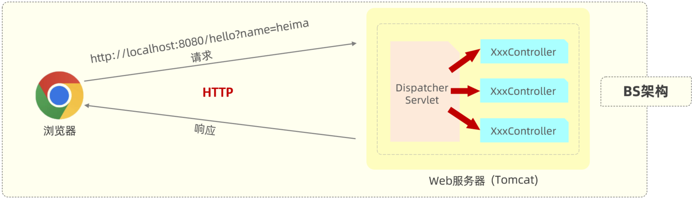
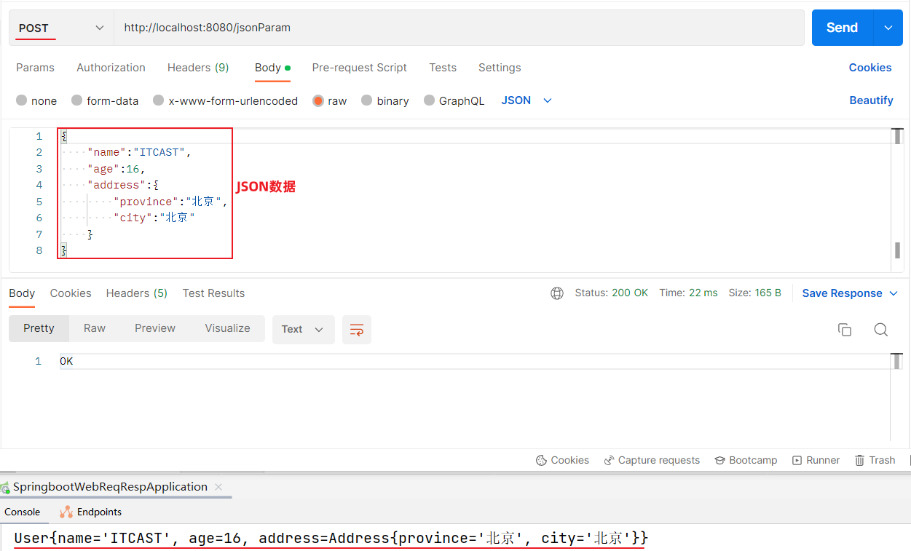

归来！
Spring Framwork系统架构

MAVEN
下载
添加环境配置
创建仓库
配置IntelliJ IDEA中maven配置
module选择maven
依赖管理
依赖配置
maven仓库依赖:https://mvnrepository.com
找到dependency(坐标) 加入pom.xml
依赖传递
间接依赖也可以传递到

排除依赖1
2
3
4
5
6
7
8
9
10
11
12<dependency>
<groupId>ch.qos.logback</groupId>
<artifactId>logback-classic</artifactId>
<version>1.2.3</version>
<!--排除依赖-->
<exclusions>
<exclusion>
<groupId>junit</groupId>
<artifactId>junit</artifactId>
</exclusion>
</exclusions>
</dependency>
依赖范围
通过 <scope>...</scope> 设置作用范围
生命周期
- clean：清理工作
- default：核心工作（编译、测试、打包、安装、部署等）
COMPILETESTPACKAGEINSTALL···
- site：生成报告、发布站点等。
在同一套声明周期中，当运行后面阶段时，前面的阶段也会被运行
执行：直接双击或在终端中mvn command
HTTP请求响应
创建springboot
新建项目选择springboot，勾选spring web这个依赖
创建请求处理类HelloController，添加请求处理方法hello，运行启动类1
2
3
4
5
6
7
8
9//请求处理类
public class HelloController {
public String hello(){
System.out.println("hello?");
return "hello!";
}
}
浏览器：
- 输入网址：
http://192.168.100.11:8080/hello- 通过IP地址192.168.100.11定位到网络上的一台计算机
- 通过端口号8080找到计算机上运行的程序
localhost:8080, 意思是在本地计算机中找到正在运行的8080端口的程序 - /hello是请求资源位置
- 资源：对计算机而言资源就是数据
- web资源：通过网络可以访问到的资源（通常是指存放在服务器上的数据）
localhost:8080/hello，意思是向本地计算机中的8080端口程序，获取资源位置是/hello的数据- 8080端口程序，在服务器找/hello位置的资源数据，发给浏览器
- web资源：通过网络可以访问到的资源（通常是指存放在服务器上的数据）
- 资源：对计算机而言资源就是数据
服务器：（可以理解为ServerSocket）
- 接收到浏览器发送的信息（如：/hello）
- 在服务器上找到/hello的资源
- 把资源发送给浏览器
Tomcat
=servlet容器

Postman
Postman是一款功能强大的网页调试与发送网页HTTP请求的Chrome插件。
Postman原是Chrome浏览器的插件，可以模拟浏览器向后端服务器发起任何形式(如:get、post)的HTTP请求
使用Postman还可以在发起请求时，携带一些请求参数、请求头等信息作用：常用于进行接口测试
请求响应
请求
原始方式1
2
3
4
5
6
7
8
9
10
11
12
13
14
15
16
17
18
public class RequestController {
//原始方式
public String simpleParam(HttpServletRequest request){
// http://localhost:8080/simpleParam?name=Tom&age=10
// 请求参数： name=Tom&age=10 （有2个请求参数）
// 第1个请求参数： name=Tom 参数名:name，参数值:Tom
// 第2个请求参数： age=10 参数名:age , 参数值:10
String name = request.getParameter("name");//name就是请求参数名
String ageStr = request.getParameter("age");//age就是请求参数名
int age = Integer.parseInt(ageStr);//需要手动进行类型转换
System.out.println(name+" : "+age);
return "OK";
}
}
SpringBoot方式
在Springboot的环境中，对原始的API进行了封装，接收参数的形式更加简单。 如果是简单参数，参数名与形参变量名相同，定义同名的形参即可接收参数。
1 |
|
参数名不一致
1 |
|
注意事项：
@RequestParam中的required属性默认为true（默认值也是true），代表该请求参数必须传递，如果不传递将报错
为什么在controll里推荐使用包装类型(Integer、Long…)？
这是 Spring 框架设计的推荐模式，因为：
- Web 请求的参数不是强类型的（字符串传输、可能为空）；
- 请求参数缺失、空值、类型不匹配等情况很常见；
- 使用包装类型可以安全地判空；
- 可以搭配
@RequestParam(required = false)让参数成为可选项。
⚠️ 如果你写的是 int status
- Java 基本类型
int不允许为 null； - Spring 在数据绑定阶段会尝试把请求参数转换为
int；- 若成功：传值；
- 若失败（比如参数缺失或无法转换）：Spring 会直接抛出异常（
HttpMessageNotReadableException或TypeMismatchException）；
- 整个接口直接报 400 Bad Request，没法做优雅处理。
实体参数
要想完成数据封装，需要遵守如下规则：请求参数名与实体类的属性名相同1
2
3
4
5
6
7
8
9
10
11
12
13
14
15
16
17
18
19
20
21
22
23
24
public String simplePojo(User user){
System.out.println(user);
return "OK";
}
//数组集合参数
public String arrayParam(String[] hobby){
System.out.println(Arrays.toString(hobby));
return "OK";
}
//默认情况下，请求中参数名相同的多个值，是封装到数组。如果要封装到集合，要使用@RequestParam绑定参数关系
public String listParam( List<String> hobby){
System.out.println(hobby);
return "OK";
}
//日期时间参数
public String dateParam( LocalDateTime updateTime){
System.out.println(updateTime);
return "OK";
}1
2
3
4
5
6
7
8
9
10
11
12
13
14
15
16
17
18
19
20
21
22
23
24
25
26
27
28
29
30package org.example.springbootquickstart.pojo;
public class User {
private String name;
private int age;
public int getAge() {
return age;
}
public void setAge(int age) {
this.age = age;
}
public String getName() {
return name;
}
public void setName(String name) {
this.name = name;
}
public String toString() {
return "User{" +
"name='" + name + '\'' +
", age=" + age +
'}';
}
}
get和set方法必须设置，如果不设置拿不到对应参数输出结果为：
1 | User{name='null', age=0} |
数组集合Postman测试：
在前端请求时，有两种传递形式：
方式一： xxxxxxxxxx?hobby=game&hobby=java
方式二：xxxxxxxxxxxxx?hobby=game,java
默认情况下，请求中参数名相同的多个值，是封装到数组。如果要封装到集合，要使用@RequestParam绑定参数关系!!!!!
复杂实体
复杂实体对象的封装，需要遵守如下规则：
- 请求参数名与形参对象属性名相同，按照对象层次结构关系即可接收嵌套实体类属性参数。

JSON参数
- @RequestBody注解：将JSON数据映射到形参的实体类对象中（JSON中的key和实体类中的属性名保持一致）
实体类：Address
1 | public class Address { |
实体类：User
1 | public class User { |
Controller方法：
1 |
|
postman接口测试：

封装
当前端提交的数据和实体类中对应的属性差别比较大时，建议使用DTO来封装数据
拷贝属性
1 | BeanUtils.copyProperties(employeeDTO, employee); |
前提是属性名一致
路径参数
1 |
|
响应
统一响应结果
1 |
|
1 | package org.example.springbootquickstart.pojo; |
@RequestMapping
在Spring当中为了简化请求路径的定义，可以把公共的请求路径，直接抽取到类上，在类上加一个注解@RequestMapping，并指定请求路径”/depts”。
注意事项：一个完整的请求路径，应该是类上@RequestMapping的value属性 + 方法上的 @RequestMapping的value属性
分层解耦
三层架构
- Controller：控制层。接收前端发送的请求，对请求进行处理，并响应数据。
- Service：业务逻辑层。处理具体的业务逻辑。
- Dao：数据访问层(Data Access Object)，也称为持久层。负责数据访问操作，包括数据的增、删、改、查。
充分解耦
使用对象时，在程序中不要主动使用new产生对象，转换为中外部提供对象
- IoC(Inversion of Control)控制反转
- 对象的创建控制权由程序转移到外部 (比如JButton)
- Spring提供了一个IoC容器，用来充当IoC思想中的“外部”
- IoC容器负责对象的创建、初始化等一系列工作，被创建或被管理的对象在IoC容器中统称为Bean
- DI(Dependency Injection)依赖注入
- 容器为应用程序提供运行时，所依赖的资源，称之为依赖注入。
- 效果：使用对象时不仅能直接从IoC容器中获取，并且获取到的bean已经绑定了所有的依赖关系
- Controller层：
1 |
|
- Service层：
1 | //将当前对象交给IOC容器管理,成为IOC容器的bean |
Dao层：
1 | //将当前对象交给IOC容器管理,成为IOC容器的bean |
IoC案例
@Component的衍生注解
| 注解 | 位置 |
|---|---|
| @Controller | 标注在控制器类上(RestController已包含) |
| @Service | 标注在业务类上 |
| @Repository | 标注在数据访问类上(由于与mybatis整合，用得少) |
@Repository(value = "daoA") 指定bean的名字
此四个注解想要生效，需要被扫描注解@ComponentScan扫描，虽然没有显式配置，但是实际上已经包含在了启动类声明注解@SpringBootApplicatiion中，默认扫描范围是启动类所在包及其子包。
手动设置: @ComponentScan(("dao","com.arg")) ←包名
*设置这个注解之后会把原来的覆盖掉，很麻烦，所以一般按照项目规范放在启动类那个包下面。
DI案例
如果bean有多个：
| 注解 | 作用 |
|---|---|
| @Primary | 使得注解下面的bean优先注入 |
| @Aurowired + @Qualifier(“bean value”) | 注入指定名称的bean |
| @Resource(name =”bean value”) | 注入指定名称的bean |
@q和@a是spring提供的 @r是jdk提供的
@a默认按照类型注入 @r默认按照名称注入
开发规范
REST
- REST（Representational State Transfer），表述性状态转换，它是一种软件架构风格。
传统URL风格如下：
1 | http://localhost:8080/user/getById?id=1 GET：查询id为1的用户 |
我们看到，原始的传统URL呢，定义比较复杂，而且将资源的访问行为对外暴露出来了。
基于REST风格URL如下：
1 | http://localhost:8080/users/1 GET：查询id为1的用户 |
其中总结起来，就一句话：通过URL定位要操作的资源，通过HTTP动词(请求方式)来描述具体的操作。
统一响应结果
前后端工程在进行交互时，使用统一响应结果 Result。
1 | import lombok.AllArgsConstructor; |
开发流程
查看页面原型明确需求
- 根据页面原型和需求，进行表结构设计、编写接口文档(已提供)
阅读接口文档
- 思路分析
- 功能接口开发
- 就是开发后台的业务功能，一个业务功能，我们称为一个接口
- 功能接口测试
- 功能开发完毕后，先通过Postman进行功能接口测试，测试通过后，再和前端进行联调测试
- 前后端联调测试
- 和前端开发人员开发好的前端工程一起测试
开发文档
除了使用postman之外，还可以用swagger依赖生成本地接口测试页面。
apifox之类也可以。
Swagger
1.导入 knife4j 的maven坐标
2.在配置类中加入 knife4j 相关配置
3.设置静态资源映射，否则接口文档页面无法访问
| 注解 | 说明 |
|---|---|
| @Api | 用在类上，例如Controller，表示对类的说明 |
| @ApiModel | 用在类上，例如entity、DTO、VO |
| @ApiModelProperty | 用在属性上，描述属性信息 |
| @ApiOperation | 用在方法上，例如Controller的方法，说明方法的用途、作用 |
配置文件
主配置文件引用dev文件的配置，即开发环境的配置，投入生产时可以更换配置。
PageHelper
原始方式的分页查询，存在着”步骤固定”、”代码频繁”的问题
解决方案：可以使用一些现成的分页插件完成。对于Mybatis来讲现在最主流的就是PageHelper。
EmpMapper
1 |
|
EmpServiceImpl
1 |
|
文件上传
保证每次上传文件时文件名都唯一的（使用UUID获取随机文件名）
1 |
|
那么如果需要上传大文件，可以在application.properties进行如下配置：
1 | #配置单个文件最大上传大小 |
如果直接存储在服务器的磁盘目录中，存在以下缺点：
- 不安全：磁盘如果损坏，所有的文件就会丢失
- 容量有限：如果存储大量的图片，磁盘空间有限(磁盘不可能无限制扩容)
- 无法直接访问
为了解决上述问题呢，通常有两种解决方案：
- 自己搭建存储服务器，如：fastDFS 、MinIO
- 使用现成的云服务，如：阿里云，腾讯云，华为云
阿里云OSS
参数配置化 Utils
因为application.properties是springboot项目默认的配置文件，所以springboot程序在启动时会默认读取application.properties配置文件，而我们可以使用一个现成的注解：@Value，获取配置文件中的数据。
@Value 注解通常用于外部配置的属性注入，具体用法为： @Value(“${配置文件中的key}”)
1 |
|
yml配置文件
在springboot项目当中是支持多种配置方式的，除了支持properties配置文件以外，还支持yml格式的配置文件。
基本语法：
- 大小写敏感
- 数值前边必须有空格，作为分隔符
- 使用缩进表示层级关系，缩进时，不允许使用Tab键，只能用空格（idea中会自动将Tab转换为空格）
- 缩进的空格数目不重要，只要相同层级的元素左侧对齐即可
#表示注释，从这个字符一直到行尾，都会被解析器忽略
常见的数据格式:
对象/Map集合
1 | user: |
数组/List/Set集合
1 | hobby: |
@ConfigurationProperties
登录校验
怎么来实现登录校验的操作呢？具体的实现思路可以分为两部分：
- 在员工登录成功后，需要将用户登录成功的信息存起来，记录用户已经登录成功的标记。
- 在浏览器发起请求时，需要在服务端进行统一拦截，拦截后进行登录校验。
加密存储密码
1 | password = DigestUtils.md5DigestAsHex(password.getBytes()); |
md5加密
统一拦截技术会话跟踪技术
会话技术
web开发当中，会话指的就是浏览器与服务器之间的一次连接，我们就称为一次会话
会话跟踪：一种维护浏览器状态的方法，服务器需要识别多次请求是否来自于同一浏览器，以便在同一次会话的多次请求间共享数据。
统一拦截技术会话跟踪技术:
- Cookie（客户端会话跟踪技术）
- 数据存储在客户端浏览器当中
- Session（服务端会话跟踪技术）
- 数据存储在储在服务端
- 令牌技术
JWT令牌
JWT全称：JSON Web Token （官网：https://jwt.io/）
定义了一种简洁的、自包含的格式，用于在通信双方以json数据格式安全的传输信息。由于数字签名的存在，这些信息是可靠的。
JWT的组成： （JWT令牌由三个部分组成，三个部分之间使用英文的点来分割）第一部分：Header(头）， 记录令牌类型、签名算法等。 例如：{“alg”:”HS256”,”type”:”JWT”}
第二部分：Payload(有效载荷），携带一些自定义信息、默认信息等。 例如：{“id”:”1”,”username”:”Tom”}
第三部分：Signature(签名），防止Token被篡改、确保安全性。将header、payload，并加入指定秘钥，通过指定签名算法计算而来。
要想使用JWT令牌，需要先引入JWT的依赖：
1 | <!-- JWT依赖--> |
生成：
1 |
|
打开JWT的官网，将生成的令牌直接放在Encoded位置，此时就会自动的将令牌解析出来。
校验：
1 |
|
@Builder注释
可以通过.builder.属性名(参数).属性名(参数).···.build(); 来传入数据
Servlet规范中的Filter过滤器

1 |
|
*需导入fastjson依赖
Spring提供的interceptor拦截器
拦截器：
- 是一种动态拦截方法调用的机制，类似于过滤器。
- 拦截器是Spring框架中提供的，用来动态拦截控制器方法的执行。
拦截器的作用：
- 拦截请求，在指定方法调用前后，根据业务需要执行预先设定的代码。
1 | //自定义拦截器 |
1 |
|
拦截路径
addPathPatterns("要拦截路径")方法，指定要拦截哪些资源。
excludePathPatterns("不拦截路径")方法，指定哪些资源不需要拦截。
1 |
|

过滤器和拦截器之间的区别：
- 接口规范不同：过滤器需要实现Filter接口，而拦截器需要实现HandlerInterceptor接口。
- 拦截范围不同：过滤器Filter会拦截所有的资源，而Interceptor只会拦截Spring环境中的资源。
Filter & Interceptor & AOP
1 | 浏览器请求 |
| 对比项 | Filter | Interceptor | AOP |
|---|---|---|---|
| 运行层级 | Servlet 最外层 | Spring MVC 层 | Spring 方法层 |
| 能拦截？ | 所有 HTTP 请求 | Controller 请求 | 任何 Spring Bean 方法 |
| 是否与 HTTP 强绑定 | ✔ 强关联 | ✔ 关联 | ❌ 无关联 |
| 能否拦截内部方法调用 | ❌ | ❌ | ✔ 有能力 |
| 通常使用场景 | CORS、XSS、登录过滤 | 权限、登录校验、API 级拦截 | 日志、事务、性能、审计 |
| 是否知道被调用的方法 | ❌ | ✔（Controller 方法） | ✔（所有 Spring Bean 方法） |
| 是否需要 Spring | ❌（Servlet 规范） | ✔ | ✔ |
| 是否能拦截静态资源 | ✔ | ❌ | ❌ |
异常处理
当我们没有做任何的异常处理时，我们三层架构处理异常的方案：
- Mapper接口在操作数据库的时候出错了，此时异常会往上抛(谁调用Mapper就抛给谁)，会抛给service。
- service 中也存在异常了，会抛给controller。
- 而在controller当中，我们也没有做任何的异常处理，所以最终异常会再往上抛。最终抛给框架之后，框架就会返回一个JSON格式的数据，里面封装的就是错误的信息，但是框架返回的JSON格式的数据并不符合我们的开发规范。
全局异常处理器
- 在类上加上一个注解@RestControllerAdvice，加上这个注解就代表我们定义了一个全局异常处理器。
- 定义一个方法来捕获异常，加上注解@ExceptionHandler。通过@ExceptionHandler注解当中的value属性来指定我们要捕获的是哪一类型的异常。
1 |
|
用例：防止重复用户名
1 |
|
@RestControllerAdvice = @ControllerAdvice + @ResponseBody
处理异常的方法返回值会转换为json后再响应给前端
事务&AOP
Spring事务管理
在方法运行之前，开启事务，如果方法成功执行，就提交事务，如果方法执行的过程当中出现异常了，就回滚事务。
Transactional注解
作用：开启事务，方法执行完毕之后提交事务。如果在这个方法执行的过程当中出现了异常，就会进行事务的回滚操作。
@Transactional注解书写位置：
- 方法 -> 当前方法交给spring进行事务管理
- 类 -> 当前类中所有的方法都交由spring进行事务管理
- 接口 -> 接口下所有的实现类当中所有的方法都交给spring 进行事务管理
般会在业务层当中来控制事务，因为在业务层当中，一个业务功能可能会包含多个数据访问的操作。在业务层来控制事务，我们就可以将多个数据访问操作控制在一个事务范围内。
rollbackFor
默认情况下，只有出现RuntimeException(运行时异常)才会回滚事务。
假如我们想让所有的异常都回滚，需要来配置@Transactional注解当中的rollbackFor属性，通过rollbackFor这个属性可以指定出现何种异常类型回滚事务。
1 |
propagation
事务的传播行为:
- 当一个事务方法被另一个事务方法调用时，这个事务方法应该如何进行事务控制。
常见的事务传播行为:
| 属性值 | 含义 |
|---|---|
| REQUIRED | 【默认值】需要事务，有则加入，无则创建新事务 |
| REQUIRES_NEW | 需要新事务，无论有无，总是创建新事务 |
| SUPPORTS | 支持事务，有则加入，无则在无事务状态中运行 |
| NOT_SUPPORTED | 不支持事务，在无事务状态下运行,如果当前存在已有事务,则挂起当前事务 |
| MANDATORY | 必须有事务，否则抛异常 |
| NEVER | 必须没事务，否则抛异常 |
| … |
AOP
Aspect Oriented Programming（面向切面编程、面向方面编程）
AOP的作用：在程序运行期间在不修改源代码的基础上对已有方法进行增强（无侵入性: 解耦）
AOP的优势：
- 减少重复代码
- 提高开发效率
- 维护方便
常见的应用场景如下：
- 记录系统的操作日志
- 权限控制
- 事务管理：我们前面所讲解的Spring事务管理，底层其实也是通过AOP来实现的，只要添加@Transactional注解之后，AOP程序自动会在原始方法运行前先来开启事务，在原始方法运行完毕之后提交或回滚事务
AOP依赖
1 | <dependency> |
AOP示例
1 |
|
AOP核心概念
| 概念 | 含义 |
|---|---|
| Advice（通知） | 你想添加的“共性逻辑” |
| PointCut（切入点） | 通知应用到哪些方法 |
| Aspect（切面） | 通知 + 切入点 |
| Target（目标对象） | 被增强的原始对象方法 |
JoinPoint
连接点指的是可以被aop控制的方法。
在Spring中用JoinPoint抽象了连接点，用它可以获得方法执行时的相关信息，如目标类名、方法名、方法参数等。
| 通知类型 | 连接点参数类型 |
|---|---|
| @Around | ProceedingJoinPoint |
| 其他通知 | JoinPoint |
1 | //环绕通知 |
Advice
指哪些重复的逻辑，也就是共性功能（最终体现为一个方法）
上面recordTime方法即是
PointCut
匹配连接点的条件，通知仅会在切入点方法执行时被应用
在aop的开发当中，我们通常会通过一个切入点表达式来描述切入点
如execution(* com.example.demo.service.*.*(..))
execution 切入表达式
语法为：
1 | execution(访问修饰符? 返回值 包名.类名.?方法名(方法参数) throws 异常?) |
?:可以省略的部分
事例：
1 |
可以使用通配符描述切入点
*：单个独立的任意符号，可以通配任意返回值、包名、类名、方法名、任意类型的一个参数，也可以通配包、类、方法名的一部分..：多个连续的任意符号，可以通配任意层级的包，或任意类型、任意个数的参数
使用..省略包名, 使用*代替类名
1 | execution(* com..*.delete(java.lang.Integer)) |
根据业务需要，可以使用 且（&&）、或（||）、非（!） 来组合比较复杂的切入点表达式。
1 | execution(* com.example.demo.service.DeptService.list(..)) || execution(* com.example.demo.service.DeptService.delete(..)) |
1 | //匹配DeptServiceImpl类中以find开头的方法 |
在满足业务需要的前提下，尽量缩小切入点的匹配范围。如：包名匹配尽量不使用 ..，使用 * 匹配单个包
@annotation 切入点（基于注解匹配）
实现步骤：
编写自定义注解
在业务类要做为连接点的方法上添加自定义注解
1 |
|
1 |
|
1 |
|
execution切入点表达式
根据我们所指定的方法的描述信息来匹配切入点方法，这种方式也是最为常用的一种方式
如果我们要匹配的切入点方法的方法名不规则，或者有一些比较特殊的需求，通过execution切入点表达式描述比较繁琐
annotation 切入点表达式
基于注解的方式来匹配切入点方法。这种方式虽然多一步操作，我们需要自定义一个注解，但是相对来比较灵活。我们需要匹配哪个方法，就在方法上加上对应的注解就可以了
Aspect
当通知和切入点结合在一起，就形成了一个切面
切面所在的类，我们一般称为切面类（被@Aspect注解标识的类）
Target
目标对象指的就是通知所应用的对象，我们就称之为目标对象。
如com.example.demo.service中的所有方法
Spring的AOP底层是基于动态代理技术来实现的，也就是说在程序运行的时候，会自动的基于动态代理技术为目标对象生成一个对应的代理对象。在代理对象当中就会对目标对象当中的原始方法进行功能的增强。
通知类型
Spring中AOP的通知类型：
| 注解 | 效果 |
|---|---|
| @Around | 环绕通知，此注解标注的通知方法在目标方法前、后都被执行 |
| @Before | 前置通知，此注解标注的通知方法在目标方法前被执行 |
| @After | 后置通知，此注解标注的通知方法在目标方法后被执行，无论是否有异常都会执行 |
| @AfterReturning | 返回后通知，此注解标注的通知方法在目标方法后被执行，有异常不会执行 |
| @AfterThrowing | 异常后通知，此注解标注的通知方法发生异常后执行 |
执行顺序: around before -> before -> afterReturning /afterthrowing(若有异常)-> after -> around after
在不同切面类中，默认按照切面类的类名字母排序：
- 方法前：字母排名靠前的先执行
- 方法后：字母排名靠前的后执行
※@Around环绕通知需要自己调用 ProceedingJoinPoint.proceed() 来让原始方法执行，其他通知不需要考虑目标方法执行
@PointCut
Spring提供了@PointCut注解，该注解的作用是将公共的切入点表达式抽取出来，需要用到时引用该切入点表达式即可。
1 |
|
※当外部其他切面类中也要引用当前类中的切入点表达式，就需要把private改为public
@Order
使用@Order注解，控制通知的执行顺序：
1 |
|
扩展Spring MVC的消息转换器
在 WebMvcConfiguration 中扩展Spring MVC的消息转换器，统一对日期类型进行格式化处理
1 |
|
HttpClient
HttpClient是Apache的一个子项目，是高效的、功能丰富的支持HTTP协议的客户端编程工具包。
它允许 Java 程序去调用外部接口，例如：
- 访问第三方服务（例如支付宝、微信、短信平台）
- 调用别的项目 / 微服务
- 获取外部数据
1 | <dependency> |
阿里云oss的依赖里已经有这个工具包
核心API：
- HttpClient
- HttpClients
- CloseableHttpClient
- HttpGet
- HttpPost
发送请求步骤：
- 创建HttpClient对象
- 创建Http请求对象
- 调用HttpClient的execute方法发送请求
1 | /** |
1 | /** |
Spring Cache
Spring Cache 是一个框架，实现了基于注解的缓存功能，只需要简单地加一个注解，就能实现缓存功能。
Spring Cache 提供了一层抽象，底层可以切换不同的缓存实现，例如：
- EHCache
- Caffeine
- Redis
1 | <dependency> |
| 注解 | 说明 |
|---|---|
| @EnableCaching | 开启缓存注解功能，通常加在启动类上 |
| @Cacheable | 在方法执行前先查询缓存中是否有数据，如果有数据，则直接返回缓存数据；如果没有缓存数据，调用方法并将方法返回值放到缓存中 |
| @CachePut | 将方法的返回值放到缓存中 |
| @CacheEvict | 将一条或多条数据从缓存中删除 |
具体的实现思路如下：
导入Spring Cache和Redis相关maven坐标
在启动类上加入@EnableCaching注解，开启缓存注解功能
在用户端接口SetmealController的 list 方法上加入@Cacheable注解
在管理端接口SetmealController的 save、delete、update、startOrStop等方法上加入CacheEvict注解
底层原理说是代理原理
操作很简单！
内网穿透
局域网获得一个公网ip
cpolar
Spring Task
Spring Task 是Spring框架提供的任务调度工具，可以按照约定的时间自动执行某个代码逻辑
cron表达式
cron表达式其实就是一个字符串，通过cron表达式可以定义任务触发的时间
构成规则：分为6或7个域，由空格分隔开，每个域代表一个含义
每个域的含义分别为：秒、分钟、小时、日、月、周、年(可选)
入门案例
Spring Task使用步骤：
①导入maven坐标 spring-context（已存在）
②启动类添加注解 @EnableScheduling 开启任务调度
③自定义定时任务类
使用案例：
1 | /** |